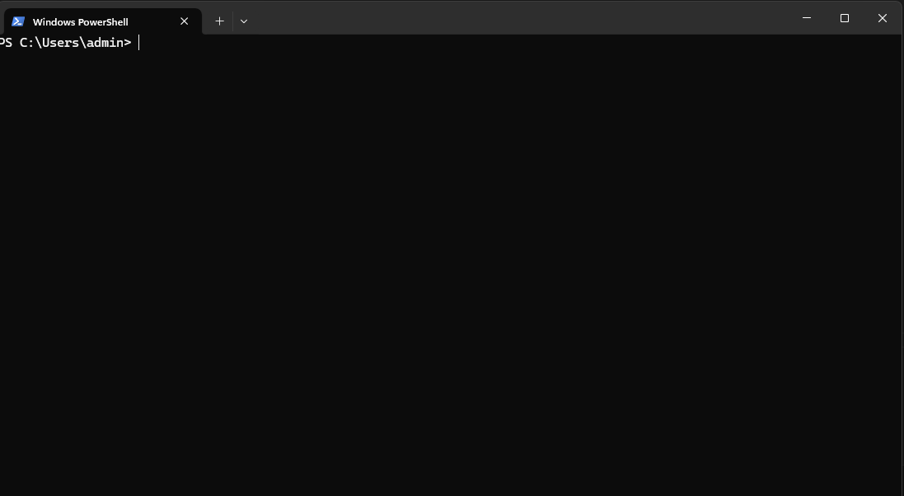

Creating a virtual enviroment (venv) in Python
Hey, Today i will be teaching you how to create a venv in python
What is a virtual enviroment (venv)?
A virtual enviroment is like its own little python installation inside your project. it can be used to install specific versions of packages when your system doesnt support newer variants.
How to create a virtual enviroment (venv)
Step 1
First. Open a new Terminal. This is what it looks like on Windows 11

Step 2
Enter this command into your terminal
python3 -M venv venv
Step 3
Activating your virtual enviroment
On Windows run
.\venv\scripts\activate
On MacOS and Linux run
source venv/bin/activate
Step 4
Now that your virtual enviroment is activated you can install the packages you need.
Also read Installing Packages With pip